처음 쓰는 분을 위한 안내
For first-time users
박자에 맞춰
저절로 넘어가는 악보Sheet music that turns its own pages, in time
악보 PDF나 종이 악보의 사진을 가져오면 화면 가득 펼쳐 보여 주고, PDF는 페이지별 마디와 도돌이표까지 읽어 둡니다. 템포만 맞추면 연습할 때마다 지금 연주하는 마디가 악보 위에 표시되고 마지막 마디가 끝나는 순간 다음 페이지로 넘어가서 손을 악기에서 뗄 일이 없어요.
Bring in a PDF, or photos of a paper score: MusicTools shows it full screen, and reads the bars and repeats on each page of a PDF. Set the tempo once, and every time you practice the bar you're playing is marked on the score and the next page appears as the last bar ends, so your hands stay on your instrument.
아래 탭The tabs
화면 아래 탭으로 이동해요. 앱은 Library 탭에서 열리고, 악보 보기와 자동 넘김은 모두 여기서 시작합니다.
Switch with the tabs along the bottom. The app opens on Library, where reading and hands-free page turning start.
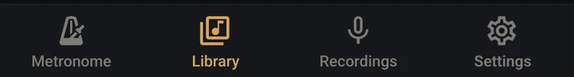
악보 없이 바로 쓰는 메트로놈과 튜너
A metronome and a tuner, no score needed
악보 · 세트리스트 · 연습 · 필기
Your scores, setlists, practice and notes
연습 녹음 · 허밍을 MIDI로
Record practice, turn humming into MIDI
페이지 넘김 방식 · 얼굴 제스처 · 여백 자르기 · 사용법. 화면을 옮기지 않고 오른쪽에서 잠깐 나와요
How pages turn, face gestures, margin trimming, this guide. It slides in from the right over whatever's showing
Library
빠른 시작: 첫 곡 준비하기Quick start: your first song
네 단계면 페이지가 저절로 넘어가는 연습을 시작할 수 있어요.
Four steps to practice with pages that turn themselves.
-
악보 가져오기Bring in your sheet music
Add Sheet를 누르고 PDF from Files에서 기기에 있는 PDF를 고르세요. 여러 개를 한 번에 가져올 수 있어요. 종이 악보라면 Photos나 Scan with Camera로 사진을 악보로 만들 수 있어요(아래 참고).
Tap Add Sheet, then PDF from Files, and choose PDFs from your device; you can pick several at once. For a paper score, Photos or Scan with Camera makes one from pictures of its pages (see below).
가져오는 동안 앱이 악보를 읽어 페이지별 마디 수와 도돌이표를 찾아 둡니다. 버튼에 Reading page 1 of 3…처럼 진행 상황이 보이고, 한 쪽에 1초쯤 걸려요.
While it imports, MusicTools reads the score to count the bars on each page and find the repeats. The button shows how far it is, like Reading page 1 of 3…, at about a second a page.
- 1Add Sheet: PDF · 사진 · 스캔Add Sheet: a PDF, photos or a scan
- 2곡을 누르면 악보가 열려요Tap a song to open its score
- 3 필기 · 세트리스트에 넣기, PDF 공유, 이름 변경, 폴더 이동, 페이지 정리, 삭제 Write on it · Add to a setlist, share the PDF, rename, move, pages, delete
- 4Songs · Setlists: 곡 목록과 세트리스트Songs · Setlists
- 5곡 이름으로 찾기Search by title
- 6Recent: 최근에 연 곡Recent: the songs you opened last
- 7폴더 만들기New folder
- 8 라이브러리 백업 · 복원 Back up or restore the library
- 9Select: 여러 곡을 골라 옮기기, 세트리스트에 넣기, 지우기Select: pick several songs to move, add to a setlist or delete
1 2 3 4 5 6 7 8 9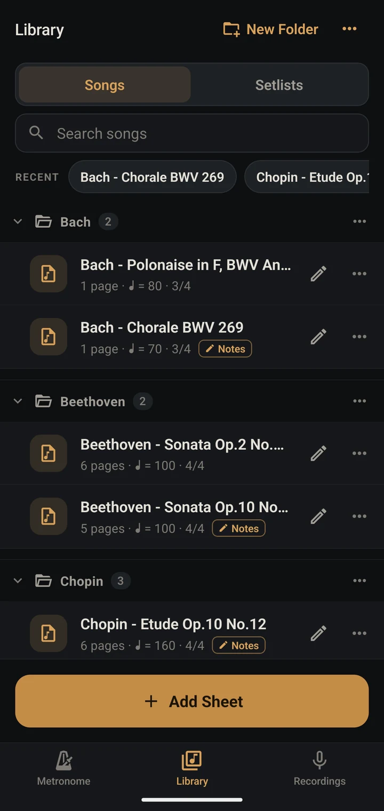
-
악보 열기Open the score
곡을 누르면 악보가 화면 가득 열려요. 둘레의 흰 여백은 잘라 내서 음표가 더 크게 보입니다. 가운데를 누르면 위아래 막대가 나타나고, 한 번 더 누르면 사라져요. 화면 왼쪽이나 오른쪽을 누르거나 옆으로 밀면 한 쪽씩 넘어갑니다.
Tap a song and its score fills the screen, the white margins trimmed so the notes come out larger. A tap in the middle brings up the bars at the top and bottom, and another puts them away. Tap the left or right of the screen, or swipe, to turn one page.
- 1라이브러리로Back to the Library
- 2Practice: 연습 시작 (4단계)Practice: start practicing (step 4)
- 3 필기, Song Form, 메트로놈, 세트리스트, 페이지 정리 등 (아래). 태블릿은 대부분 위 막대에 바로 보여요 The editor, the Song Form, the metronome, setlists, pages and more (below). On a tablet most are right in the top bar
- 4가운데: 막대 보이기 · 숨기기The middle: show or hide the bars
- 5양옆: 한 쪽씩 넘기기Either side: turn one page
- 6진행 바: 원하는 쪽으로Seek bar: go to any page
- 7박 표시: 메트로놈이 돌면 박마다 켜져요Beats: they light up as the metronome plays
- 8템포 · 박자: 누르면 메트로놈 설정 (3단계)Tempo and meter: tap for the metronome (step 3)
- 9메트로놈 시작 · 정지Start or stop the metronome
1 2 3 4 5 6 7 8 9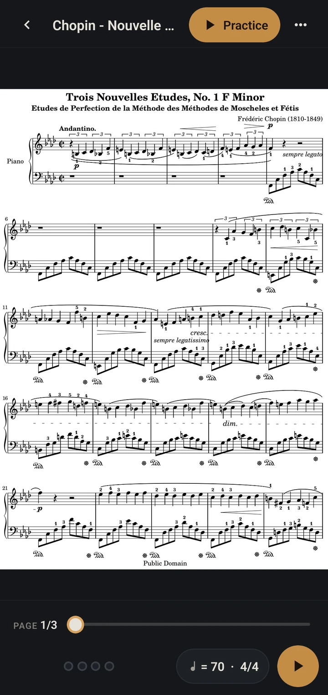
-
템포와 박자 맞추기Set the tempo and time signature
아래 막대의 템포(♩ = 70 · 4/4)를 누르면 이 곡의 메트로놈 설정이 열려요. 템포와 박자는 악보에서 읽어 오지 않아서 처음에는 ♩ = 100, 4/4로 들어 있으니 곡의 처음에 맞게 꼭 바꿔 주세요. 페이지가 넘어가는 시점이 이 값으로 정해집니다. 곡 중간에 바뀌는 곳은 Song Form 편집 화면에서 그 마디에 표시해요. 설정은 곡마다 자동으로 저장돼요.
Tap the tempo in the bottom bar (♩ = 70 · 4/4) to open this song's metronome. Neither the tempo nor the meter is read from the score, so they start at ♩ = 100 in 4/4: change them to match the start of the piece. Page turns are timed from these. Where they change partway through, mark it on that bar in the Song Form editor. Each song keeps its own, saved as you go.
템포를 누르면 숫자와 함께 기준 음표(Counted in)도 고를 수 있어요. 악보에 ♩. = 60이라고 적혀 있으면 점4분음표를 고르고 60을 넣으면 됩니다.
Tap the tempo to pick the number and the note it counts (Counted in). If the score says ♩. = 60, choose the dotted quarter and enter 60.
- 1박 표시: 누를 때마다 보통 → 소리 없음 → 높은 소리 → 낮은 소리Beats: tap to cycle normal → silent → high → low
- 2템포: 눌러서 숫자와 기준 음표 고르기Tempo: tap to pick the number and the note it counts
- 3TAP: 박자에 맞춰 두드리면 템포가 입력돼요TAP: tap along to set the tempo
- 4박자표 (없는 박자와 3+2+2 같은 묶음은 에서)Time signature ( for others, and for groups like 3+2+2)
- 5한 박에 치는 횟수Clicks per beat
- 6소리Sound
- 7Start: 악보를 보며 메트로놈만 켜기 (Simple 연습)Start: the metronome over the score (Simple practice)
1 2 3 4 5 6 7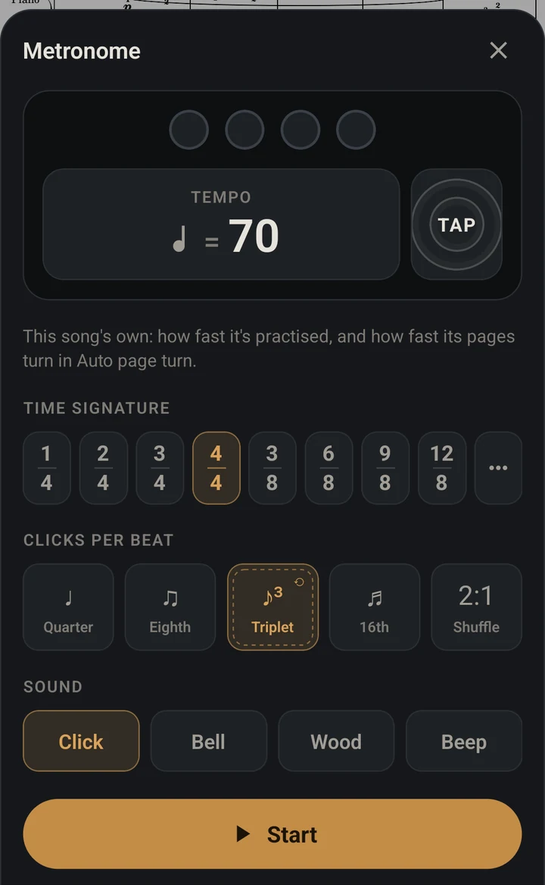
-
연습 시작Start practicing
위 막대의 Practice에서 Auto page turn을 고르고, 연습 화면에서 Start를 누르세요. 곡의 박자와 템포로 한두 마디를 세는 카운트인 뒤 메트로놈과 함께 시작하고, 막대는 비켜나 악보만 남아요. 지금 연주하는 마디가 악보 위에 표시되고, 페이지의 마지막 마디가 끝나면 다음 페이지로 넘어갑니다.
Tap Practice in the top bar, choose Auto page turn, then tap Start. After a count-in of a bar or two at the song's own meter and tempo the metronome starts, and the bars make way for the score. The bar you're playing is marked on it, and each page turns when its last bar ends.
Auto page turn 아래에 이 곡의 Song Form이 요약돼 있어요(몇 쪽, 몇 마디, 걸리는 시간). 자동으로 읽지 못한 곡은 Song Form을 만들자고 안내하니, 편집 화면에서 마디를 넣어 주세요(아래 참고).
Under Auto page turn the song's Song Form is summed up: pages, bars and how long it takes. A song that couldn't be read offers to set its Song Form up instead; add its bars in the editor (see below).
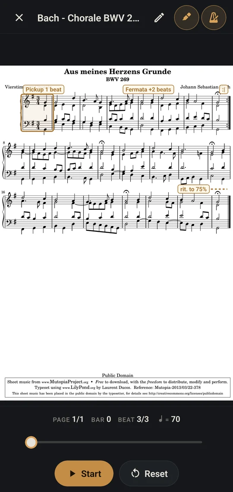
11 · Start1 · Start 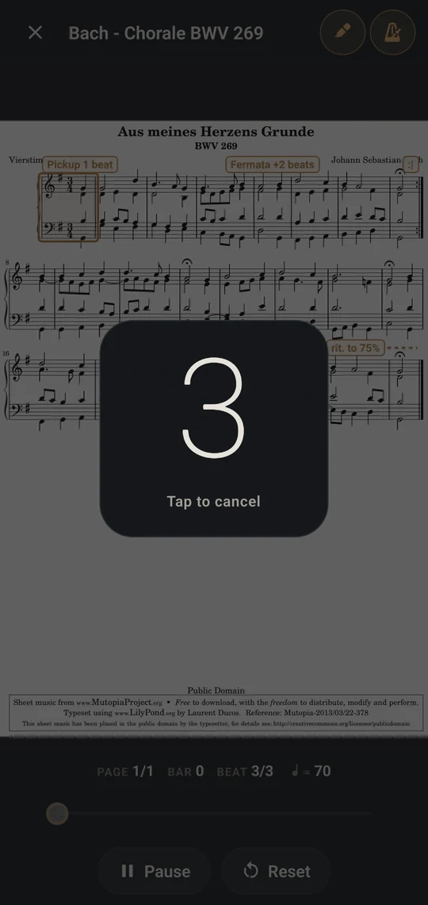
카운트인 (누르면 취소)The count-in (tap to cancel)
Library → 곡
Library → a song
악보 보기Reading the score새 기능NEW
곡을 누르면 열리는 화면이에요. 악보가 화면을 다 쓰고, 막대는 필요할 때만 위에 올라와요. 곡은 마지막으로 본 쪽에서 다시 열리고, 악보를 보는 동안에는 화면이 꺼지지 않아요.
What opens when you tap a song. The score has the whole screen, and the bars come over it only when you want them. A song opens on the page you left it on, and the screen stays on while you read.
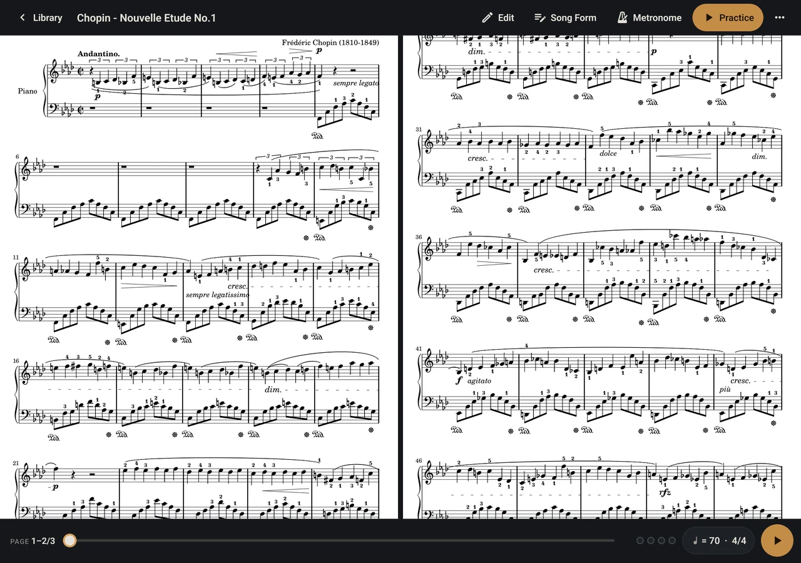
- 흰 여백을 잘라 음표를 크게 보여 줘요. 인쇄된 그대로 보려면 Settings(위 막대의 톱니바퀴, 휴대폰은 안)에서 Trim Page Margins를 끄세요(모든 곡에 같이 적용).The white margins are trimmed so the notes come out larger. To see pages as printed, turn off Trim Page Margins in Settings (the gear on the top bar; on a phone, under ). It's for every song.
- Settings → Turn by를 Half Page로 바꾸면 반 페이지씩 넘겨요. 한 번 넘기면 다음 쪽 윗부분만 위에 들어오고, 연주 중인 아랫부분은 움직이지 않아요. 한 번 더 넘기면 나머지가 바뀌어요. 악보 줄 사이에서 나누고, 한 쪽씩 보일 때(세로 화면)만 동작해요.Set Turn by in Settings to Half Page to turn half a page at a time. One turn brings in only the top of the next page, and the part you're playing stays still; the next turn changes the rest. Pages are divided between lines of music, and this works where one page shows at a time (a tablet held upright).
- Settings → Follow Song Form을 켜면 Song Form이 있는 곡은 연주 순서대로 넘어가요. 도돌이표가 나오면 앞 쪽으로 돌아가고, 잠깐 "Back to page 2 (repeat)"처럼 알려 줘요. Half Page와 함께 쓰면 돌아갈 줄이 화면 맨 위에 오고, 한 번 더 넘기면 그 쪽의 나머지가 그 아래에 나타나요.Turn on Follow Song Form in Settings and a song with a Song Form turns in the order it's played: back for a repeat, with a word on screen such as "Back to page 2 (repeat)". With Half Page, the line you're going back to comes in at the top of the screen, and the next turn shows the rest of that page below it.
- 필기가 있는 곡은 Notes(휴대폰은 → Hide Notes)로 필기를 감추고 원래 악보만 볼 수 있어요.A song with notes can hide them with Notes (on a phone, → Hide Notes) for a clean page.
- 블루투스 페이지 넘김 페달(키보드처럼 연결되는 것)로도 넘겨요. → ↓ Page Down 스페이스는 다음 쪽, ← ↑ Page Up은 앞 쪽이에요.A Bluetooth page-turn pedal (one that connects as a keyboard) turns the pages too: → ↓ Page Down or space for the next, ← ↑ Page Up for the one before.
- 진행 바를 끌면 쪽 번호가 따라 바뀌고, 놓으면 그 쪽으로 가요. 세트리스트에서 연 곡은 마지막 쪽에서 한 번 더 넘기면 다음 곡으로 이어져요.Drag the seek bar and the page number follows; let go to go there. A song opened from a setlist goes on to the next one when you turn past its last page.
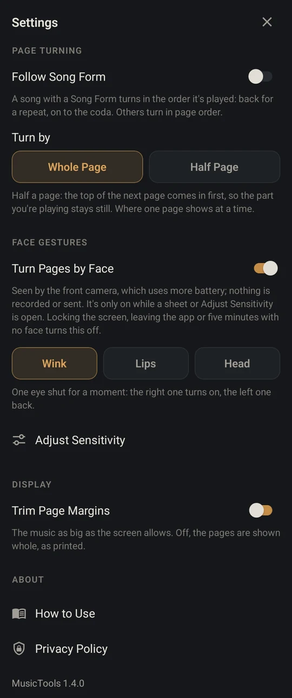
Settings: 넘기는 방식과 보이는 방식
Settings: how pages turn and how they show
아래 탭의 톱니바퀴, 또는 악보 화면 위 막대의 톱니바퀴(휴대폰은 안)로 열어요. 화면을 옮기지 않고 오른쪽에서 나와서, 악보를 보면서 바꿀 수 있어요.
The gear on the tab bar opens it, or the gear on the viewer's top bar (on a phone, under ). It slides in from the right over whatever's showing, so you can change things while looking at the sheet.
- 1Follow Song Form: Song Form이 있는 곡을 연주 순서대로 넘기기Follow Song Form: a song with a Song Form turns in the order it's played
- 2Turn by: 한 쪽씩(Whole Page) 또는 반 쪽씩(Half Page)Turn by: a Whole Page or a Half Page at a time
- 3Turn Pages by Face: 얼굴로 넘기기 켜고 끄기Turn Pages by Face: face gestures on or off
- 4Wink · Lips · Head: 넘길 때 쓸 제스처Wink · Lips · Head: the gesture that turns the page
- 5Adjust Sensitivity: 제스처를 해 보며 감도 맞추기Adjust Sensitivity: try your gesture and set how readily it turns
- 6Trim Page Margins: 흰 여백 자르기Trim Page Margins: the white margins cut away
- 7How to Use · Privacy Policy: 이 가이드와 개인정보처리방침How to Use · Privacy Policy: this guide and the privacy policy
- 기기에 앞면 카메라나 얼굴 추적이 없으면 3~5번은 나오지 않아요.Items 3 to 5 don't show on a device without a front camera or face tracking.
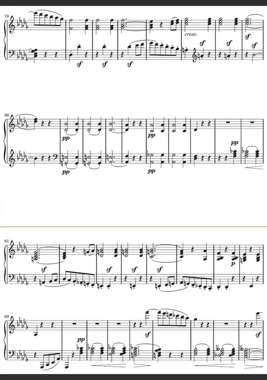
Half Page: 한 번 넘겼을 때
Half Page: after one turn
가는 놋쇠색 선 위가 다음 쪽 윗부분, 아래가 읽던 부분이에요. 아래쪽은 움직이지 않으니 끝까지 읽고, 위로 올라가서 이어 읽으면 돼요. 한 번 더 넘기면 아래쪽도 바뀝니다.
Above the thin brass line is the top of the next page; below it, what you're reading. That part doesn't move, so play to its end and carry on at the top. The next turn changes the bottom too.
악보 화면 → Practice
The viewer → Practice
연습 모드 두 가지Two ways to practice
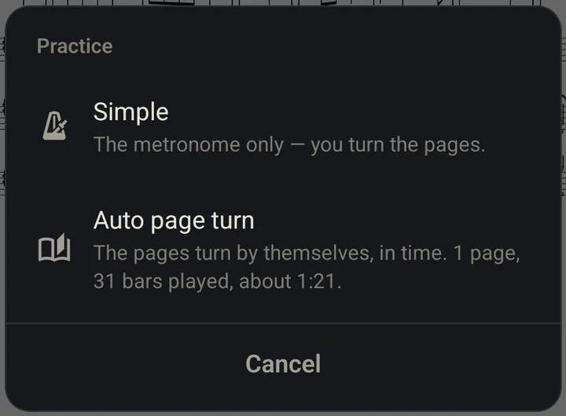
- 악보 화면 그대로 메트로놈만 켜져요. 아래 막대의 ▶와 같아요.
- 화면 왼쪽·오른쪽을 누르거나 밀어서, 또는 페달로 한 쪽씩 넘겨요.
- 따로 설정할 것 없이 바로 시작해요.
- The viewer with its metronome on: the same as ▶ in the bottom bar.
- Tap the left or right of the screen, swipe, or use a pedal to turn a page.
- Nothing to set up.
- 악보에 표시한 마디와 도돌이표·D.C.·D.S.대로, 박자에 맞춰 페이지가 넘어가요.
- 지금 연주하는 마디가 악보 위에 표시돼요.
- 곡 중간의 템포·박자 변화, rit.·accel., 늘임표, 못갖춘마디까지 따라가요.
- 진행 바로 원하는 마디부터 다시 연습해요.
- 곡의 Song Form으로 움직여요. 가져올 때 자동으로 만들어지고, 편집 화면에서 고쳐요.
- Pages turn in time, following the bars and the repeats, D.C. and D.S. marked on the score.
- The bar you're playing is marked on the score.
- Changes of tempo or meter, rit. and accel., fermatas and pickups are all followed.
- Jump back to any bar with the seek bar.
- It runs on the song's Song Form, made for you at import and put right in the editor.
Library → Setlists
세트리스트Setlists새 기능NEW
연주하는 순서대로 곡을 묶어 두는 목록이에요. 매일 하는 연습 루틴, 연주회 프로그램, 주일 예배곡처럼요. 한 곡을 여러 세트리스트에 넣을 수 있어요.
Songs in the order you play them: your daily practice routine, a concert program, Sunday's songs. A song can be in any number of setlists.
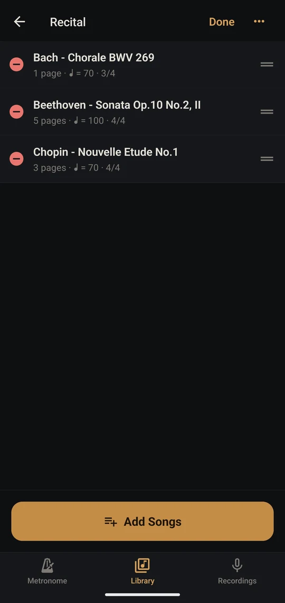
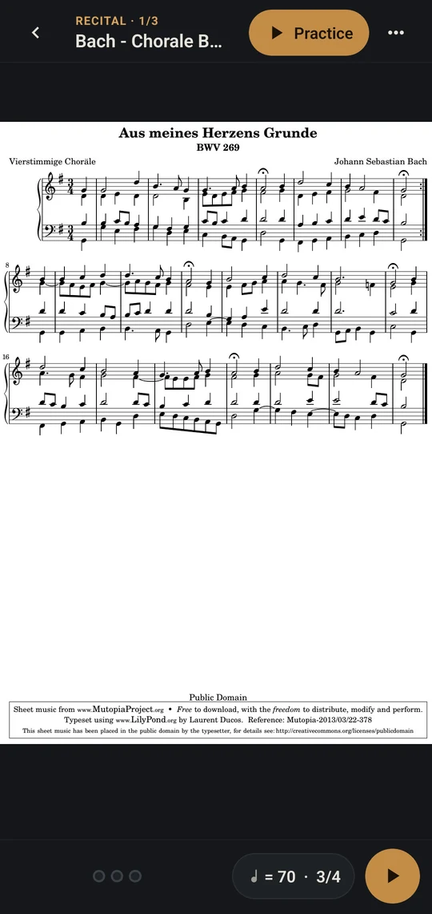
- Library → Setlists → New Setlist로 이름을 정하고, Add Songs로 곡을 고르세요. 곡의 → Add to Setlist로도 넣을 수 있어요.Library → Setlists → New Setlist, name it, and pick its songs with Add Songs. A song's → Add to Setlist works too.
- Edit을 누르면 손잡이(=)를 끌어 순서를 바꾸고, ⊖로 곡을 뺄 수 있어요. 곡 자체는 라이브러리에 그대로 있어요.Edit: drag the handles (=) to reorder, ⊖ to take a song out. The song itself stays in the Library.
- 곡이나 Play from the Start를 누르면 악보가 열리고, 위에 "세트리스트 이름 · 1/3"이 보여요. 그 줄을 누르면 곡 목록에서 바로 옮겨 가요.Tap a song, or Play from the Start: the score opens with "SETLIST · 1/3" above it. Tap that line for the list of songs.
- 마지막 쪽에서 한 번 더 넘기면 다음 곡이 열려요. 앞뒤 곡은 ⏮ ⏭(휴대폰은 → Previous Song · Next Song)으로도 가요.Turn past the last page and the next song opens. ⏮ ⏭ (on a phone, → Previous Song or Next Song) go back and forth too.
- 세트리스트의 곡을 Auto page turn으로 연습하다 곡이 끝나면 아래에 Next: 다음 곡이 나와요. 누르면 다음 곡이 같은 방식으로 이어집니다.When Auto page turn reaches the end of a song in a setlist, Next: the next song appears at the bottom; tap it to carry on the same way.
Library → Add Sheet
사진·스캔으로 악보 만들기Scores from photos and scans새 기능NEW
종이 악보도 찍어서 쓸 수 있어요. 사진은 기기 안에서 오선을 따라 반듯하게 펴지고, 모든 쪽이 같은 크기에 오선 크기와 시작 위치까지 맞춰진 악보 페이지가 돼요. 그래서 페이지를 넘겨도 악보가 같은 자리에 있어요.
Paper scores work too: on your device, each photo is straightened by its staves, and every page comes out the same size with the music the same size and in the same place, so nothing jumps as the pages turn.
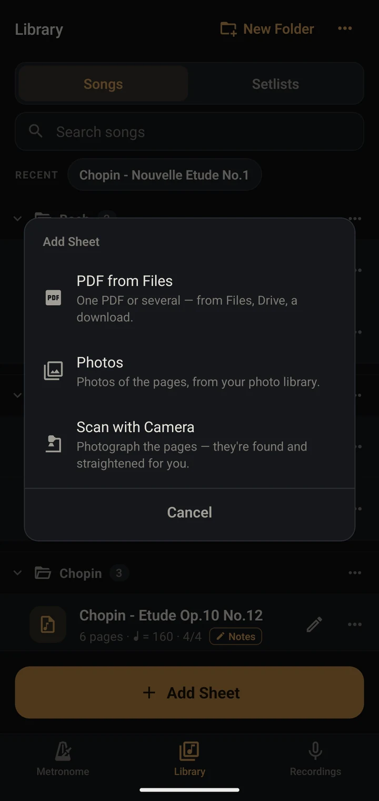
- 1PDF from Files: 파일, 드라이브, 다운로드의 PDFPDF from Files: from Files, a drive, a download
- 2Photos: 사진 앱에서 고른 악보 사진Photos: pictures of the pages from your photo library
- 3Scan with Camera: 카메라로 찍으면 페이지를 찾아 반듯하게 펴 줘요Scan with Camera: photograph the pages, and they're found and straightened for you
- Photos로 사진을 고르면 New Sheet 화면이 열려요. 사진은 들어오면서 저절로 펴져요. 옆으로 찍은 사진은 세워지고, 기울거나 책처럼 휜 악보는 오선을 따라 반듯해지고, 그림자는 걷혀요. 쪽마다 어떻게 됐는지 이름 아래에 적혀 있어요.Photos opens New Sheet, and each photo is straightened as it comes in: one taken sideways is turned upright, a page shot at a slant or curving like a book's is flattened by its staves, and shadows are evened out. Each page says what was done to it.
- 옆 페이지처럼 악보가 아닌 것까지 찍혔다면 모서리 버튼으로 네 모서리를 악보 페이지의 모서리에 맞추고 Done을 누르세요. 지팡이 버튼을 끄면 그 쪽은 자동으로 펴지 않고 찍힌 그대로(모서리를 맞췄다면 그만큼 펴서) 들어가요.If the photo takes in more than the page, such as the page beside it, use the corner button to drag the four corners onto the page's corners and tap Done. Turn off a page's wand button and it goes in as photographed, straightened only by its corners if you set them.
- 손잡이(=)를 끌어 쪽 순서를 맞추고, Add Photos나 Scan Pages로 더 넣은 뒤 Create를 누르면 곡이 만들어지고 악보가 열려요.Drag the handles (=) to put the pages in order, add more with Add Photos or Scan Pages, and tap Create: the song is made and opens.
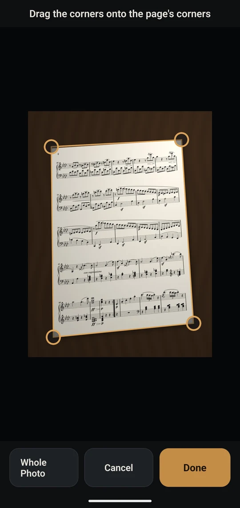
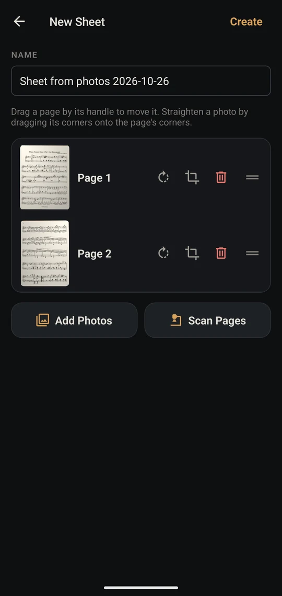
- 위에서 내려다보고 밝은 곳에서 찍을수록 잘 펴져요. 사진으로 만든 곡은 마디를 미리 읽어 두지 않아요. Song Form 편집 화면을 열면 읽어 들이니, 확인하고 고쳐 주세요.Shot from above in good light straightens best. A song made from photos doesn't have its bars read in advance: open the Song Form editor and it reads them, for you to check and correct.
- 다른 앱의 PDF도 바로 가져와요. 파일, 메일, 브라우저에서 PDF를 공유하거나 열 앱으로 MusicTools를 고르면 가져오고, 하나면 바로 열어 줍니다.A PDF in another app comes straight in too: share it from Files, Mail or a browser to MusicTools, or open it with MusicTools, and it's imported (and opened, if it's just the one).
- 고른 사진만 쓰고 기기 밖으로 보내지 않아요. 원래 사진은 사진 앱에 그대로 남고, 줄인 사본이 곡과 함께 앱 안에 보관돼요(백업에도 들어가요).Only the photos you pick are used, and nothing leaves your device. The photos themselves stay in your photo library, and a smaller copy of each is kept with the song, in backups too.
악보 화면 → Song Form
The viewer → Song Form
Song Form 편집The Song Form editor
악보 위에 마디를 맞추고, 마디에 도돌이표나 템포 같은 표시를 붙이는 화면이에요. 연주 순서와 박자는 표시를 보고 앱이 계산하고, 바꾼 내용은 바로 저장돼요. 태블릿은 위 막대의 Song Form, 휴대폰은 → Song Form으로 열어요. 두 손가락으로 확대하고, 위의 화살표로 페이지를 옮겨요.
Here you line the bars up with the score and put marks on them, such as repeats or a tempo change. MusicTools works out the playing order and the timing from the marks, and every change saves as you make it. Open it with Song Form in the top bar on a tablet, or → Song Form on a phone. Zoom with two fingers; the arrows at the top change the page.
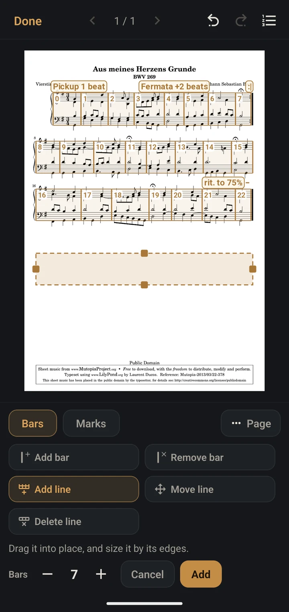
Bars 탭: 마디 맞추기
Bars tab: lining up the bars
- 도구를 고르지 않으면 악보를 눌러도 아무것도 바뀌지 않아요. 고칠 때만 도구를 고르세요.With no tool picked, touching the score changes nothing. Pick a tool only to make a change.
- Add bar를 고르고 마디선이 있어야 할 곳을 누르면 마디가 나뉘어요. Remove bar로 마디선 가까이를 누르면 두 마디가 합쳐져요.With Add bar, tap where a barline belongs to split the bar. With Remove bar, tap near a barline to join the two bars.
- 앱이 읽지 못한 줄은 Add line을 고르고 그 줄을 누르세요. 점선 상자를 끌어 맞추고 양옆과 위아래 손잡이로 크기를 맞춘 뒤, 마디 수를 정하고 Add를 누릅니다.For a line it couldn't read, pick Add line and tap that line. Drag the dashed box into place, size it by its sides and its top and bottom handles, set how many bars it has, and tap Add.
- 마디선이나 줄의 가장자리는 끌어서 옮겨요. 줄 전체를 옮기려면 Move line을 고르고 끌어요.Drag a barline or a line's edge to move it. To move a whole line, pick Move line and drag it.
- 1Add bar · Remove bar: 마디선 넣기 · 빼기Add bar · Remove bar: put in or take out a barline
- 2Add line: 줄(한 단) 넣기Add line: add a line of music
- 3넣을 줄: 끌어서 옮기고 손잡이로 크기 맞추기The line being added: drag it, size it by its handles
- 4마디 수를 정하고 AddSet its bars, then Add
- 5Move line · Delete line: 줄 옮기기 · 지우기Move line · Delete line
- 6Page: 이 쪽 다시 읽기 · 마디 수만 세기 · 비우기Page: read it again, only count its bars, or clear it
- 7되돌리기 · 다시 실행Undo · Redo
- 8Play order: 연주 순서와 걸리는 시간 (태블릿은 오른쪽에 늘 보여요)Play order: the order and how long it takes (always beside the page on a tablet)
- 확실하지 않게 읽은 줄은 빨갛게 보여요. 그 줄의 마디를 확인해 주세요.A line read without confidence shows in red: check its bars.
- 그릴 수 없는 PDF나 빨리 끝내고 싶은 쪽은 Page → Only count its bars로 마디 수만 넣을 수 있어요. 그 쪽에서는 지금 마디가 표시되지 않아요.For a PDF that can't be drawn, or a page you want to set up quickly, Page → Only count its bars takes just a number of bars. The bar being played isn't marked on that page.
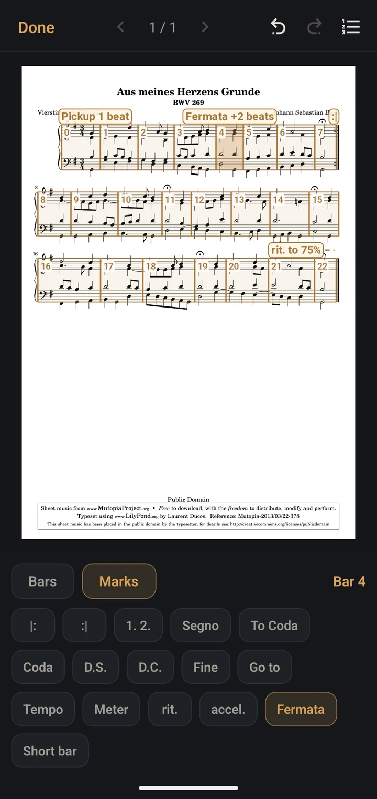
Marks 탭: 표시 붙이기
Marks tab: putting marks on bars
- 마디를 누르면 그 마디가 골라지고 아래에 표시 버튼이 나와요. 여러 마디에 걸친 도돌이 구간, 1·2번 괄호, rit.는 마디들을 끌어서 골라요.Tap a bar to pick it, and the mark buttons appear. For a repeat, an ending or a rit. over several bars, drag across them.
- 버튼을 누르면 표시가 붙어요. 이미 붙은 표시는 버튼이 밝게 보이고, 다시 누르면 바꾸거나 지울 수 있어요.Tap a button to add that mark. A mark the bar already has shows lit; tap it again to change or remove it.
- 연주 순서는 표시를 보고 앱이 계산해요. Play order에서 확인하세요.The playing order follows from the marks. Check it under Play order.
- 1고른 마디The picked bar
- 2연주 순서를 정하는 표시Marks for the playing order
- 3시간을 정하는 표시Marks for the timing
- 4악보 위의 표시: 연습 화면에도 같은 모양으로 보여요Marks on the score, shown the same way in practice
- 5rit.: 여러 마디에 걸친 표시는 점선으로 이어져요A rit.: a mark over several bars runs on in a dashed line
- |: :|
- 도돌이표. :|를 다시 누르면 몇 번 반복할지 바꿔요. 여러 마디를 끌어서 고르면 |: Repeat :|로 한 번에 넣어요.
- 1. 2.
- 괄호. 몇 번째에 연주하는지 정해요.
- Segno · To Coda · Coda · D.S. · D.C. · Fine
- D.S.나 D.C.로 돌아간 뒤의 반복은 관습대로 건너뛰고, 표시를 다시 눌러 바꿀 수 있어요.
- Go to
- 표시로 나타낼 수 없는 순서: 이 마디 다음에 고른 마디로 가요.
- Tempo · Meter
- 이 마디부터 템포나 박자가 바뀌어요. 템포를 따로 정하지 않은 박자 변화는 음표 빠르기를 그대로 둬요. 4/4 ♩ = 100에서 6/8로 가면 8분음표가 분당 200이에요.
- rit. · accel.
- 고른 마디들에서 박마다 조금씩 느려지거나 빨라져 마지막 박에 정한 %가 되고, 다음 마디부터는 원래 템포예요. 다시 누르면 %를 바꿔요.
- Fermata
- 그 마디를 몇 박 더 끌어요(+1~+12). 메트로놈은 늘인 박도 쳐요.
- Short bar
- 못갖춘마디. Pickup은 마디의 마지막 박들이고 마디 번호에 들어가지 않아요(첫 마디면 0번). Ends early는 처음 박들이라, 도돌이표 앞에서 Pickup과 짝을 이루는 마디에 써요. 카운트인은 Pickup 앞 박까지만 세요.
- |: :|
- Repeat signs. Tap :| again to change how many times. Drag across several bars and |: Repeat :| puts in both at once.
- 1. 2.
- Endings: which time through each is played.
- Segno · To Coda · Coda · D.S. · D.C. · Fine
- After a D.S. or D.C., repeats are skipped, as is the custom; tap the mark again to play them.
- Go to
- For an order the marks can't say: after this bar, go to the one you pick.
- Tempo · Meter
- From this bar on, a new tempo or meter. A meter change with no tempo of its own keeps the notes at the same speed: from 4/4 at ♩ = 100 to 6/8, eighths at 200.
- rit. · accel.
- Over the picked bars the tempo slows or speeds up a little each beat, reaching the percent you set on the last one; the bar after is back at tempo. Tap it again to change the percent.
- Fermata
- Holds the bar for more beats (+1 to +12). The metronome clicks the held beats too.
- Short bar
- A bar with fewer beats. A Pickup has the bar's last beats and isn't counted in the bar numbers (a first bar is bar 0). Ends early has its first beats: the bar before a repeat that pairs with a pickup. The count-in counts up to the pickup's beats.
- 곡을 시작할 때의 템포와 박자는 메트로놈 설정(악보 화면 아래 막대의 템포)에서 정하고, 곡 중간에 바뀌는 곳만 표시하세요. 거기서 박마다 정한 소리는 그 박자에만 쓰여요.Set the tempo and meter the piece starts with in the metronome settings (the tempo in the viewer's bottom bar), and mark only where they change. The sound you set for each beat there is for that meter only.
- 예전 방식(단계 목록)으로 만든 곡은 전처럼 재생돼요. Song Form을 열면 확인한 뒤 악보를 다시 읽어 새로 만듭니다.A song set up with the old step list plays as before. Opening its Song Form asks first, then reads the score again and sets it up afresh.
Practice → Auto page turn
연습 화면The practice screen
Auto page turn으로 연습하는 화면이에요. 악보가 화면을 다 쓰고, 음악이 시작되면 위아래 막대가 잠시 뒤 사라져 악보만 남아요. 악보를 누르면 막대가 잠깐 다시 나타납니다.
This is Auto page turn. The score has the whole screen, and once the music starts the bars go away after a moment, leaving just the score; a tap on it brings them back for a while.
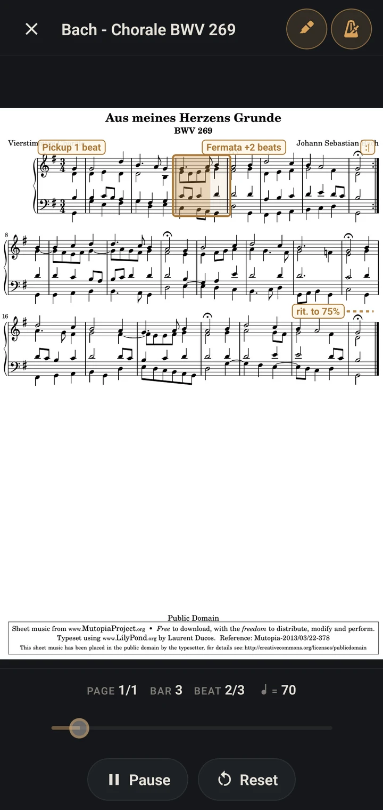
- 1악보를 누르면 막대가 다시 나타나요Tap the score to bring the bars back
- 2지금 연주하는 마디: 박마다 왼쪽부터 채워져요The bar being played: it fills from the left, a beat at a time
- 3Song Form 편집 화면에서 붙인 표시Marks you added in the Song Form editor
- 4지금 마디 표시 켜기·끄기 (모든 곡에 같이 적용)Marking the bar on or off (for every song)
- 5메트로놈 소리 켜기·끄기 (꺼도 페이지는 넘어가요)Metronome clicks on or off (pages still turn)
- 6지금 위치: 페이지 · 마디 · 박 · 템포Where you are: page, bar, beat, tempo
- 7진행 바: 멈춘 상태에서 끌어 원하는 마디로Seek bar: while paused, drag to any bar
- 8Pause 일시정지 · Reset 처음으로Pause · Reset to the start
- 9닫기: 악보 화면으로Close: back to the viewer
- 시작 전이나 멈췄을 때는 위에 필기, 필기 보기·숨기기 버튼이 나타나요.Before you start or while paused, the top bar has the editor and your notes on or off .
- 가로로 놓은 태블릿에서는 두 페이지를 펼친 책처럼 나란히 보여 줘요. 연주가 옆 쪽으로 넘어간 뒤에 다 연주한 쪽만 새 페이지로 바뀌고, 지금 보고 있는 쪽은 움직이지 않아요.On a tablet in landscape, two pages sit side by side like an open book. Once you've crossed to the other page, only the one you finished is replaced; the page you're reading never moves.
- BAR는 악보의 마디 번호예요. 못갖춘마디로 시작하는 곡은 첫 마디를 Pickup으로 표시하면 0번부터 세어 인쇄된 번호와 맞아요. rit. 중에는 템포 숫자가 줄어들고, 늘임표가 있는 마디에서는 몇 박 더 끄는지 보여요.BAR is the score's bar number. If the piece starts with a pickup, mark the first bar as a Pickup and it counts from 0, matching the print. In a rit. the tempo number goes down, and a held bar shows how many beats it's held for.
- 블루투스 페달로 시작하고 멈출 수 있어요. 세트리스트에서 연 곡은 끝나면 아래에 Next: 다음 곡이 나와요.A Bluetooth pedal starts and pauses it. In a setlist, the end of a song brings Next: the next song.
- 연습 화면에서는 악보를 확대하거나 손으로 넘기지 않아요. 다른 곳을 보려면 멈춘 뒤 진행 바를 끌고, 확대는 필기 화면에서 하세요. 태블릿에서는 연습이 진행되는 동안 화면 방향이 고정돼요.Practice doesn't zoom or scroll by hand. To look elsewhere, pause and drag the seek bar; to zoom, open the editor. On tablets, the screen stays in one orientation while practice runs.
Library → / Edit
악보에 필기하기Writing on your score
운지, 호흡, 셈여림을 악보 위에 적어 두세요. 원본 PDF는 바뀌지 않고, 적은 내용은 악보 화면과 연습 화면에도 그대로 보여요. 곡 목록의 , 악보 화면의 Edit(휴대폰은 → Edit Sheet), 연습 화면의 로 들어갑니다.
Mark fingerings, breaths and dynamics right on the page. Your original PDF stays untouched, and your notes show in the viewer and in practice too. Open the editor from the in the song list, Edit in the viewer (on a phone, → Edit Sheet), or the in practice.
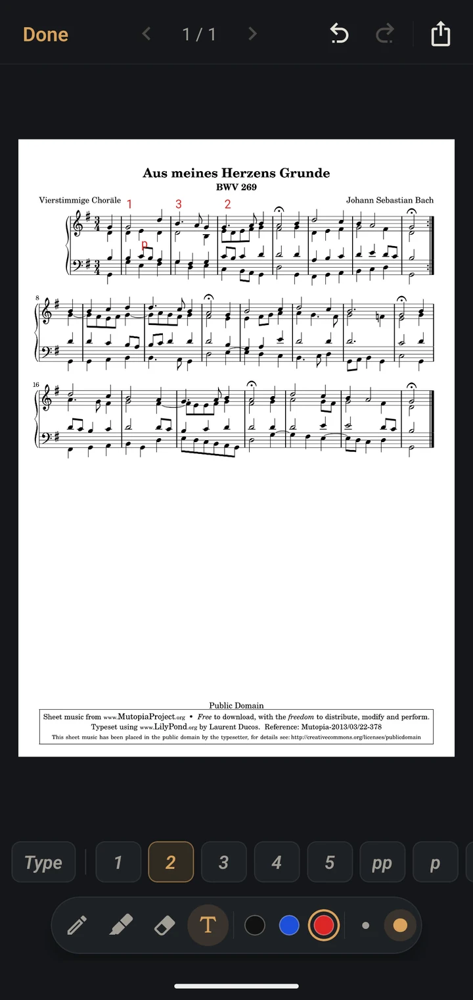
- 1Done: 끝내기 (자동 저장)Done (saved automatically)
- 2페이지 이동Change page
- 3되돌리기 · 다시 실행Undo · Redo
- 4필기가 들어간 PDF 공유 · 인쇄Share or print the PDF with your notes
- 5펜 · 형광펜 · 지우개Pen · Highlighter · Eraser
- 6텍스트Text
- 7스탬프: 운지 번호, 셈여림, 임시표, 숨표 등을 한 번에Stamps: fingerings, dynamics, accidentals, breath marks and more in one tap
- 8색Color
- 9굵기Thickness
- 10Select: 올가미로 둘러 골라 옮기거나 지우기Select: draw a loop round notes to move or delete them
- 텍스트 도구를 고르면 스탬프 줄이 나와요. 스탬프를 고르고 악보를 누를 때마다 찍히고, Type을 고르면 글자를 직접 써요.The Text tool brings up a row of stamps: pick one, and each tap on the score puts it down. Type is for writing your own.
- 두 손가락으로 확대하고 움직여요.Use two fingers to zoom and move around.
- 마지막 도구 Select(올가미)로 필기를 둘러 그리거나 하나를 누르면 점선 상자로 골라져요. 상자를 끌어 옮기고, Delete로 지워요. 되돌리기로 둘 다 되돌릴 수 있어요.The last tool, Select (the lasso), picks the notes you draw a loop round, or the one you tap, in a dashed box: drag the box to move them, or tap Delete. Undo takes either back.
- Apple Pencil이나 S펜이 악보에 닿으면 Pencil only가 켜져요. 펜으로만 쓰고 손가락으로는 페이지를 넘기거나 옮기니, 손을 화면에 대고 써도 돼요. 버튼으로 끄면 손가락으로도 써요.When an Apple Pencil or S Pen touches the page, Pencil only turns on: the pen writes and your finger turns or moves the page, so your hand can rest on the screen. Its button turns it off, and then a finger writes too.
Metronome
메트로놈과 튜너The metronome and tuner
악보 없이 바로 쓰는 메트로놈이에요. 곡마다의 메트로놈은 악보 화면 아래 막대에서 열고, 곡마다 따로 저장돼요. 위의 Tuner를 누르면 튜너로 바뀝니다.
A metronome on its own. Each song has its own too, opened from the viewer's bottom bar and kept with the song. Tap Tuner at the top for a tuner.
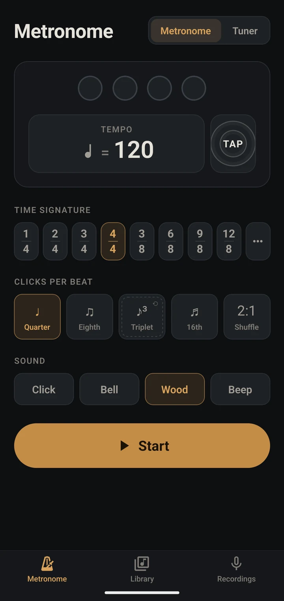
- 1박 표시: 누를 때마다 보통 → 소리 없음 → 높은 소리 → 낮은 소리Beats: tap to cycle normal → silent → high → low
- 2템포: 누르면 숫자와 기준 음표(♩, ♩., ♪ …)를 골라요Tempo: tap to pick the number and the note it counts (♩, ♩., ♪ …)
- 3TAP: 박자에 맞춰 두드리면 템포가 입력돼요TAP: tap along to set the tempo
- 4박자표 · 에서 직접: 위·아래 숫자를 고르고, Groups에서 박을 눌러 3+2+2처럼 묶어요Time signature · for your own: pick both numbers, then tap beats under Groups to group them, like 3+2+2
- 5한 박에 치는 횟수: 4분 · 8분 · 셋잇단 · 16분 · 셔플. 박자에 따라 선택지가 달라지고, 묶음이 있으면 묶음마다 한 번만 칠 수도 있어요Clicks per beat: quarter, eighth, triplet, 16th, shuffle. The choices follow the meter, and a grouped meter adds one click per group
- 6소리: Click · Bell · Wood · BeepSound: Click, Bell, Wood, Beep
- 7시작 · 정지Start and stop
- 8Tuner: 튜너로 바꾸기Tuner: switch to the tuner
튜너
The tuner
- 악기를 연주하거나 노래하면 가장 가까운 음 이름과 몇 센트 높은지(♯) 낮은지(♭)가 보여요. ±5센트 안이면 맞은 음으로 표시돼요.Play or sing a note: the nearest note shows, with how many cents sharp (♯) or flat (♭) it is. Within 5 cents it reads as in tune.
- 기준음 A는 415~466Hz 사이에서 바꿔요. 오케스트라는 흔히 442, 바로크 음높이는 415예요.Move the A it tunes to anywhere from 415 to 466 Hz: 442 for many orchestras, 415 for baroque pitch.
- 튜너가 화면에 떠 있는 동안에만 마이크를 쓰고, 들은 소리는 저장하지 않아요.It listens only while the tuner is on screen, and keeps nothing it hears.
악보 화면 →
The viewer →
그 밖의 기능More새 기능NEW
악보 화면의 메뉴(태블릿은 일부가 위 막대에 바로)와 라이브러리에 있는 기능이에요.
What's in the viewer's menu (on a tablet, some of it right in the top bar) and around the Library.
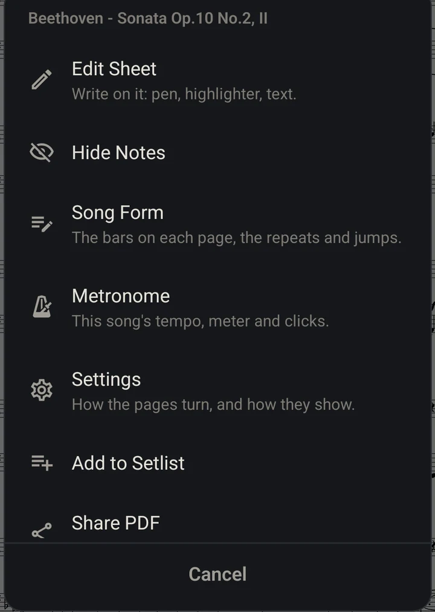
- 1Edit Sheet: 필기Edit Sheet: write on it
- 2Song Form: 마디와 도돌이표Song Form: bars and repeats
- 3Metronome: 이 곡의 메트로놈Metronome: this song's own
- 4Settings: 넘기는 방식, 얼굴 제스처Settings: how pages turn, face gestures
- 5Add to Setlist: 세트리스트에 넣기Add to Setlist: put it in a setlist
- 6Share PDF: 필기를 넣거나 빼고 PDF 보내기Share PDF: send the PDF, with or without your notes
- 메뉴를 아래로 밀면 Add Play-Along Track(음원에 맞춰 연습)과 Pages(페이지 정리)가 있어요. 둘 다 아래에서 설명해요.Scroll the menu for Add Play-Along Track (play along with a recording) and Pages (arrange the pages), both explained below.
- 세트리스트에서 연 곡은 Previous Song · Next Song도 있어요.A song opened from a setlist also has Previous Song and Next Song.
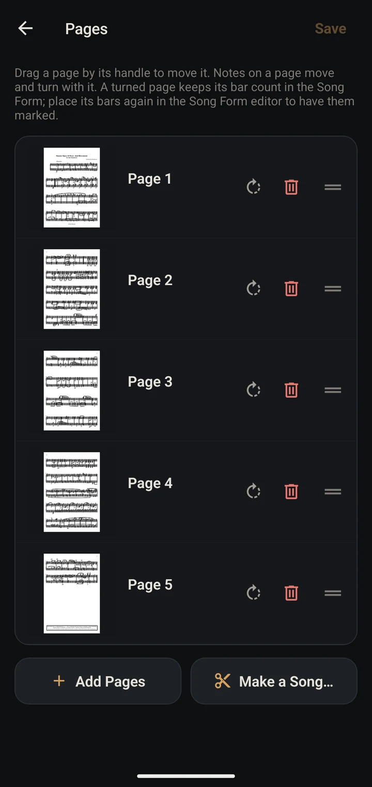
Pages: 페이지 정리
Pages: arranging the pages
- 1쪽 돌리기 (옆으로 스캔된 쪽)Turn a page (one scanned sideways)
- 2쪽 빼기Take a page out
- 3손잡이를 끌어 쪽 순서 바꾸기Drag a handle to move a page
- 4Add Pages: 사진, 스캔, 다른 PDF의 쪽을 끝에 더하기Add Pages: photos, a scan or another PDF's pages, at the end
- 5Select…: 쪽을 골라 한꺼번에 빼거나, 따로 떼어 새 곡으로 (책 한 권짜리 PDF에서 한 곡씩)Select…: pick pages to take out together, or to make a song of their own (one piece out of a whole book)
- 6Save: 바꾼 내용 저장Save the changes
- 필기와 Song Form은 쪽을 따라 옮겨지고 돌아가요. 돌린 쪽의 마디 위치는 Song Form 편집 화면에서 다시 맞춰 주세요.Notes and the Song Form move and turn with their pages. Place a turned page's bars again in the Song Form editor.
얼굴로 페이지 넘기기Turning pages with your face
Settings의 Turn Pages by Face를 켜고 Wink(한쪽 눈 감기), Lips(입술을 한쪽으로), Head(고개 돌렸다 돌아오기) 중에 고르세요. 악보 화면에서 오른쪽은 다음, 왼쪽은 이전으로 넘어가요. Head는 연주하며 고개가 많이 움직이지 않는 악기에 맞아요. 피아노에서는 저절로 넘어갈 수 있어요. 잘 안 넘어가거나 저절로 넘어가면 Adjust Sensitivity에서 제스처를 해 보며 감도를 맞추세요.
Turn on Turn Pages by Face in Settings and pick Wink (one eye shut), Lips (pushed to one side) or Head (turned and back). In the viewer, to your right turns on and to your left turns back. Head suits instruments that keep your head still: at a piano it can turn pages by itself. If pages don't turn, or turn by themselves, try your gesture in Adjust Sensitivity and set how readily it turns them.
앞면 카메라를 쓰므로 배터리를 더 씁니다. 카메라는 악보나 Adjust Sensitivity가 열려 있을 때만 켜지고, 오른쪽 위의 작은 점이 켜져 있음을 알려 줘요(얼굴이 보이면 놋쇠색). 화면을 잠그거나 다른 앱으로 가거나 5분 동안 얼굴이 보이지 않으면 저절로 꺼지고, 다시 켜야 해요. 켜지고 꺼질 때는 화면 가운데에 안내가 나오니 OK를 눌러 주세요. 카메라에 보이는 것은 저장하지 않고 기기 밖으로 보내지도 않아요.
It uses the front camera, and so more battery. The camera is only on while a sheet or Adjust Sensitivity is open, with a small dot on the sheet at the top right to say so (brass when it sees a face). Locking the screen, going to another app or five minutes with no face turns this off, and you turn it on again. A notice in the middle of the screen says when it has come on or gone off: tap OK. Nothing the camera sees is kept or leaves your device.
음원에 맞춰 연습Play along
→ Add Play-Along Track에서 Audio File(파일 앱의 음원)이나 From Recordings(녹음 탭의 녹음)를 고르면 아래 막대에 플레이어가 생겨요. 음높이는 그대로 두고 0.9×, 0.75×, 0.5×로 느리게 듣고, A–B로 한 구간을 반복해요.
→ Add Play-Along Track: an Audio File (from Files) or one From Recordings puts a player in the bottom bar. Slow it to 0.9×, 0.75× or 0.5× without changing the pitch, and loop a passage with A–B.
다른 앱에서 PDF 열기PDFs from other apps
파일, 메일, 브라우저에서 PDF를 공유하거나 열 앱으로 MusicTools를 고르면 라이브러리에 가져오고, 하나면 바로 열어 줘요. 악보를 읽는 것도 직접 가져올 때와 같아요.
Share a PDF from Files, Mail or a browser to MusicTools, or open it with MusicTools: it goes into the Library, read for its bars as any import is, and a single one opens.
검색과 최근 곡Search and recent songs
라이브러리 위의 검색창에 곡 이름 일부를 넣으면 폴더와 상관없이 찾아요. 그 아래 Recent에는 최근에 연 곡이 있어요.
Type part of a title into the search box at the top of the Library to find a song in any folder. Recent below it has the songs you opened last.
여러 곡 정리와 공유Several songs at once, and sharing
라이브러리 위의 Select를 누르고 곡을 고르세요. 폴더 줄의 체크는 그 폴더의 곡을 모두 골라요. 아래의 Move, Add to Setlist, Delete로 한꺼번에 옮기고, 세트리스트에 넣고, 지워요. 접어 둔 폴더는 앱을 다시 열어도 접혀 있어요.
Tap Select at the top of the Library and pick songs; the check on a folder's row picks every song in it. Move, Add to Setlist and Delete at the bottom do it to all of them at once. Folders you collapse stay collapsed the next time you open the app.
곡 하나를 친구에게 보낼 때는 곡의 → Share PDF. 필기가 있으면 넣을지(With Notes) 뺄지(Sheet Only) 골라요. 되돌릴 수 없는 삭제는 지우기 전에 한 번 더 물어요.
To send one song to a friend, use its → Share PDF; with notes on it, choose With Notes or Sheet Only. Deleting anything that can't be undone asks first.
백업과 복원Backup and restore
라이브러리의 → Back Up Library는 악보, 필기, Song Form, 연습용 음원, 폴더, 세트리스트를 파일 하나로 만들어요. 파일 앱이나 드라이브에 저장해 두고, 새 기기에서 Restore from Backup으로 그 파일을 고르세요. 지금 있는 곡은 그대로 두고 백업의 곡을 더해요. 녹음은 들어가지 않으니 녹음 탭에서 따로 공유하세요.
The Library's → Back Up Library puts your scores, notes, Song Forms, play-along tracks, folders and setlists into one file. Keep it in Files or a drive, and on a new device choose it with Restore from Backup: the songs in it are added, and the ones already there stay. Recordings aren't in it; share those from the Recordings tab.
Recordings
연습 녹음Recording your practice
녹음은 기기 안에만 저장되고, 이 탭에서는 녹음하는 동안에만 마이크를 사용해요.
Recordings are kept only on your device, and this tab uses the microphone only while you record.
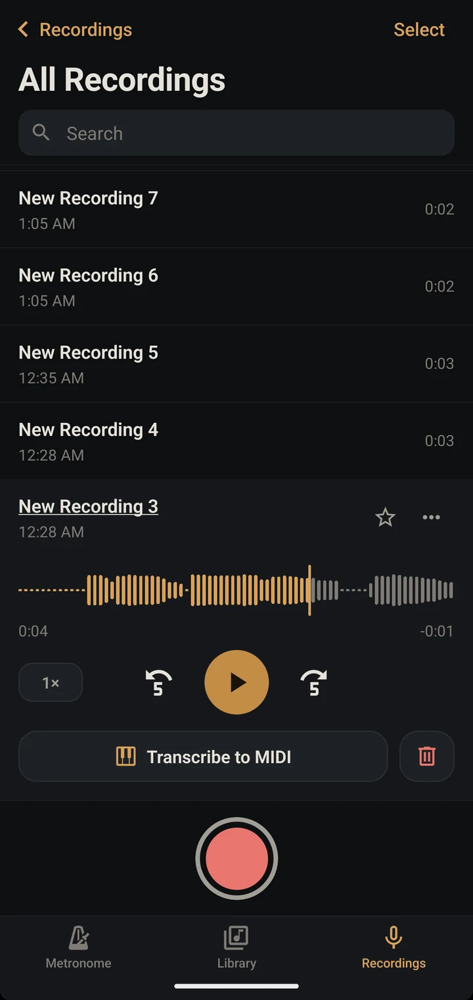
- 빨간 버튼을 누르면 녹음이 시작돼요. 처음 한 번은 마이크 사용을 허용해 주세요.Tap the red button to start. Allow microphone access the first time.
- Pause로 잠시 멈추고 Resume으로 이어서 녹음해요. Done을 누르면 저장됩니다.Pause and Resume as you like; Done saves the recording.
- 녹음하는 동안 다른 탭으로 옮겨도 녹음은 계속돼요. 녹음 탭 아이콘이 빨갛게 바뀌니, 메트로놈을 켜거나 악보를 보면서 녹음할 수 있어요.Recording keeps going when you switch tabs, and the Recordings tab icon turns red, so you can record along with the metronome or a score.
- 화면이 잠기거나 다른 앱으로 가도 녹음과 재생이 이어져요(Android는 알림이 떠 있는 동안). 전화가 오거나 다른 앱이 소리를 내면 그때까지 저장하고 멈추고, Resume을 누르면 같은 녹음에 이어서 녹음합니다.Recording and playback carry on with the screen locked or in another app (on Android, while their notification shows). If a call comes in or another app plays sound, what you have is saved and recording pauses; tap Resume to continue the same take.
- 1녹음 시작Record
- 2녹음을 누르면 재생 화면이 펼쳐져요Tap a recording to open its player
- 3파형: 누르거나 끌어서 원하는 위치로Waveform: tap or drag to jump
- 4재생 속도 1× · 0.75× · 0.5×, 옆은 5초 뒤로·앞으로Speed 1×, 0.75× or 0.5×, then 5-second skips
- 5 즐겨찾기 · 이름 변경, 폴더 이동, 오디오 공유, 삭제 Favorite · Rename, Move to Folder, Share Audio, Delete
- 6허밍을 MIDI로 바꾸기 (아래 참고). 이미 바꾼 녹음은 View MIDI로 보여요Turn humming into MIDI (see below); once done, it reads View MIDI
- 7폴더: 전체 · 즐겨찾기 · 최근 삭제 · 내 폴더Folders: All, Favorites, Recently Deleted and your own
- 재생 중에는 잠금 화면과 제어 센터(iPhone), 또는 알림(Android)에서 멈추고 15초씩 옮길 수 있어요.While a recording plays, pause it or skip 15 seconds from the lock screen and Control Center (iPhone) or its notification (Android).
- 녹음 중에 앱이 닫혀도(강제 종료, 오류, 배터리 방전) 다음에 녹음 탭을 열면 그때까지 녹음한 내용이 돌아와요.If the app closes mid-recording (force quit, a crash, a flat battery), what was recorded comes back the next time you open the Recordings tab.
- 이어폰을 빼거나 블루투스 연결이 끊기면 녹음 재생, 메트로놈, 연습이 멈춰요.Unplugging headphones, or a Bluetooth headset dropping out, stops recording playback, the metronome and practice.
- 지운 녹음은 Recently Deleted에 30일 동안 남아 있어 되살릴 수 있어요.Deleted recordings stay in Recently Deleted for 30 days, so you can recover them.
- MIDI로 바꾼 녹음은 제목 옆에 MIDI 표시가 붙어서 목록에서 바로 알아볼 수 있어요.A recording you've turned into MIDI carries a MIDI badge beside its title, so you can spot it in the list.
Recordings → Transcribe to MIDI
허밍을 MIDI로Hum to MIDI실험 기능EXPERIMENTAL
떠오른 멜로디를 허밍으로 녹음하면 음을 찾아 MIDI 파일로 만들어 줍니다. 분석은 모두 기기 안에서 이뤄져요.
Hum a melody into a recording and MusicTools finds the notes and makes a MIDI file. It all runs on your device.
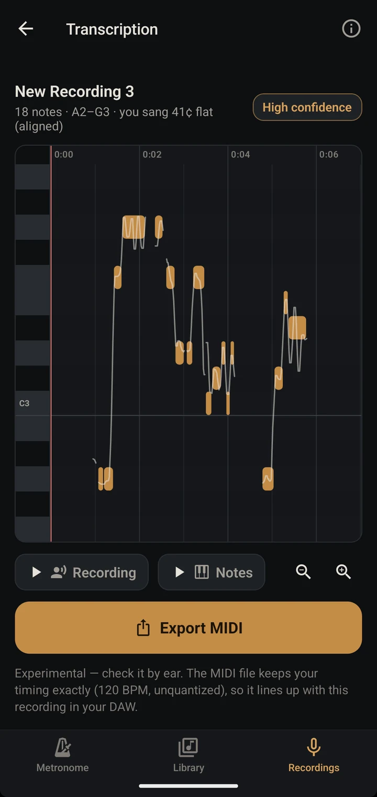
- 녹음을 펼치고 Transcribe to MIDI를 누르세요.Open a recording and tap Transcribe to MIDI.
- 안내를 확인하고 Transcribe를 누르면 음을 찾기 시작해요.Read the tips, then tap Transcribe.
- Recording(부른 소리)과 Notes(찾은 음)를 번갈아 들으며 비교해 보세요.Play Recording (what you sang) and Notes (what was found) to compare.
- Export MIDI로 내보내 DAW나 악보 프로그램에서 다듬으세요.Export MIDI and tidy it up in your DAW or notation app.
- 1찾은 음(막대)과 부른 음높이(선)Notes found (bars) over the pitch you sang (line)
- 2신뢰도 · 음 개수 · 음역 · 음정 보정값Confidence, note count, range and tuning offset
- 3부른 소리와 찾은 음 번갈아 듣기Compare what you sang with the notes
- 4확대 · 축소Zoom
- 5MIDI 파일 내보내기Export the MIDI file
- 6사용 안내 다시 보기See the tips again
잘 되는 녹음
What works
- 한 사람이 한 음씩 허밍하거나 노래한 녹음One voice, humming or singing one note at a time
- 마이크 가까이, 조용한 곳에서Close to the mic, in a quiet room
- 낮은 목소리, 높은 목소리 모두 괜찮아요Low and high voices both work
- 화음, 악기, 반주, 휘파람, 말소리는 잘 안 돼요Chords, instruments, backing music, whistling and speech won't transcribe well
- 리듬과 음정은 부른 그대로 기록돼요. 박자나 음계에 맞춰 고치지 않아요. MIDI는 120 BPM 기준이라 DAW에서 원래 녹음과 타이밍이 맞습니다.Rhythm and pitch are kept as sung; nothing is quantized or snapped to a scale. The MIDI file is at 120 BPM, so it lines up with the recording in your DAW.
- 앞부분 5분까지 분석해요. 20분이 넘는 녹음은 변환할 수 없어요.The first 5 minutes are analyzed; recordings over 20 minutes can't be transcribed.
- 실험 기능이라 틀리거나 빠진 음이 있을 수 있어요. 결과는 스케치로 활용하세요.It's experimental: expect some wrong or missing notes, and treat the result as a sketch.
자주 묻는 질문FAQ
- 연습을 시작했는데 페이지가 안 넘어가요.
- Practice에서 Simple을 골랐다면 메트로놈만 켜지고 페이지는 직접 넘겨요. 화면 왼쪽·오른쪽을 누르거나 밀어서 넘기고, 저절로 넘어가게 하려면 Practice → Auto page turn을 고르세요.
- 종이 악보밖에 없어요.
- Add Sheet → Photos로 찍어 둔 사진을 고르거나, Scan with Camera로 바로 스캔하세요. 사진은 오선을 따라 저절로 반듯하게 펴지니, 쪽 순서를 맞추고 Create를 누르면 곡이 만들어져요.
- 마디 수는 어떻게 세나요?
- 가져올 때 앱이 마디선을 읽어 둡니다. Song Form 편집 화면을 열면 악보 위에 마디 번호가 보이니, 다른 곳은 Bars 탭에서 고치세요.
- 자동으로 설정되지 않은 악보가 있어요.
- 기울어진 스캔본이나 그림자 진 사진, 여러 곡이 이어진 연습곡집이나 교재, 40쪽이 넘는 PDF는 읽지 않고 그대로 둡니다. 틀린 순서로 페이지가 넘어가는 것보다 낫기 때문이에요. 이런 곡은 Song Form 편집 화면을 열면 한 번 더 읽어 보고, 읽지 못한 줄은 Add line으로 넣거나 그 쪽의 마디 수만 넣으면 돼요. 여러 곡이 든 PDF는 Pages → Make a Song으로 한 곡씩 떼어 내세요.
- 자동으로 들어간 마디가 악보와 달라요.
- Song Form 편집 화면의 Bars 탭에서 Add bar나 Remove bar로 고치세요. 못갖춘마디로 시작하는 곡은 Marks 탭에서 첫 마디를 Short bar의 Pickup으로 정하면 마디 번호가 악보와 맞아요.
- 도돌이표나 D.C.는 어떻게 하나요?
- 도돌이표와 1번·2번 괄호는 가져올 때 읽어 둡니다. D.C.·D.S.·코다는 Song Form 편집 화면의 Marks 탭에서 그 마디에 넣으면 연주 순서를 앱이 계산해요. D.C.나 D.S.로 돌아간 뒤의 반복은 관습대로 건너뛰고, 표시를 다시 눌러 바꿀 수 있어요.
- 악보에 ♩. = 60처럼 적혀 있어요.
- 템포를 누르고 Counted in에서 점4분음표를 고른 다음 60을 넣으세요. 6/8처럼 8분음표로 세는 박자에서도 악보에 적힌 그대로 넣을 수 있어요.
- 곡 중간에 템포나 박자가 바뀌어요. rit.도 되나요?
- Song Form 편집 화면의 Marks 탭에서 그 마디를 고르고 Tempo나 Meter로 바꾸세요. rit.와 accel.는 마디들을 끌어서 고른 뒤 넣고, 다시 누르면 몇 %까지 바꿀지 고를 수 있어요. 메트로놈도 그대로 따라 쳐요.
- 못갖춘마디로 시작해요.
- Marks 탭에서 첫 마디를 고르고 Short bar에서 Pickup과 박 수를 정하세요. 마디 번호가 악보와 맞고, 카운트인이 그 박 앞까지만 세요. 도돌이표 앞에서 짝을 이루는 짧은 마디는 Ends early로 박 수를 정해요.
- 특정 마디를 길게 끌고 싶어요.
- Song Form 편집 화면의 Marks 탭에서 그 마디를 고르고 Fermata를 누르세요. 다시 누르면 몇 박 더 끌지 +1~+12에서 고를 수 있어요.
- 지금 마디 표시를 끄고 싶어요.
- 연습 화면 오른쪽 위, 메트로놈 버튼 옆의 버튼으로 끄고 켜요. 모든 곡에 같이 적용돼요.
- 연습할 곡 순서를 정해 두고 싶어요.
- Library → Setlists에서 세트리스트를 만드세요. 마지막 쪽에서 넘기면 다음 곡으로 이어지고, Auto page turn은 곡이 끝나면 다음 곡으로 넘어가자고 안내해요.
- 페이지 넘김 페달을 쓸 수 있나요?
- 키보드처럼 연결되는 블루투스 페달이면 돼요. 악보 화면에서는 쪽을 넘기고, Auto page turn에서는 시작하고 멈춰요.
- 얼굴 제스처를 켜면 카메라에 찍힌 것은 어떻게 되나요?
- 저장하지 않고 기기 밖으로 보내지도 않아요. 눈과 입, 고개의 움직임을 숫자로 읽어 페이지를 넘기는 데만 쓰고 바로 버려요. 악보가 열려 있을 때만 켜지고, 배터리를 더 쓰므로 쓰지 않을 때는 꺼 두세요.
- 악보와 녹음은 어디에 저장되나요?
- 모두 이 기기 안에만 저장돼요. 계정이나 클라우드가 없어서 앱을 삭제하면 함께 지워집니다. 악보는 Library의 ⋯ → Back Up Library로 파일 하나에 백업해 두고, 녹음은 공유 기능으로 따로 보관하세요.
- 폰과 태블릿 중 어디가 좋나요?
- 둘 다 쓸 수 있지만, 악보는 큰 화면에서 보기 편해서 태블릿을 권장해요. 가로로 놓으면 두 쪽을 나란히 볼 수 있어요.
- I started practice but the pages don't turn.
- Simple, under Practice, only starts the metronome: you turn the pages, with a tap on either side or a swipe. For pages that turn themselves, choose Practice → Auto page turn.
- I only have a paper score.
- Add Sheet → Photos takes pictures you've taken, and Scan with Camera scans it there and then. Each page is straightened by its staves on its own: put the pages in order and tap Create.
- How do I count bars?
- MusicTools reads the barlines when you import. Open the Song Form editor to see the bars numbered on the score, and fix any that are off in the Bars tab.
- Why wasn't my score set up automatically?
- Skewed scans and shadowy photos, books of exercises or several pieces in one PDF, and PDFs over 40 pages are left alone, because pages turning at the wrong moment would be worse. For those, open the Song Form editor: it reads the score once more, and you add any line it can't read with Add line, or just count a page's bars. Split a PDF of several pieces into songs with Pages → Make a Song.
- The bars it found don't match my score.
- Fix them in the Bars tab of the Song Form editor, with Add bar or Remove bar. If the piece starts with a pickup, make the first bar a Pickup under Short bar in the Marks tab, and the bar numbers match the printed ones.
- What about repeats, D.C. or D.S.?
- Repeat signs and 1st and 2nd endings are read when you import. Put D.C., D.S. and Coda on their bars in the Marks tab of the Song Form editor, and the playing order follows. After a D.C. or D.S., repeats are skipped, as is the custom; tap the mark again to change that.
- My score says ♩. = 60.
- Tap the tempo, choose the dotted quarter under Counted in, and enter 60. In meters counted in eighths, like 6/8, you can enter the marking just as it's printed.
- The tempo or meter changes partway through. And a rit.?
- Pick that bar in the Marks tab of the Song Form editor and use Tempo or Meter. For a rit. or accel., drag across its bars first; tap it again to choose how far it goes. The metronome follows along.
- My piece starts with a pickup.
- Pick the first bar in the Marks tab and set a Pickup and its beats under Short bar. The bar numbers then match the printed ones, and the count-in stops just before the pickup. Give the short bar before a repeat that pairs with it its beats with Ends early.
- Can I hold a bar longer?
- Pick it in the Marks tab of the Song Form editor and tap Fermata. Tap it again to choose how many beats more, from +1 to +12.
- Can I turn off the bar marking?
- Use the button beside the metronome's, at the top right of the practice screen. It applies to every song.
- Can I keep the songs I practice in order?
- Make a setlist under Library → Setlists. Turning past a song's last page opens the next, and Auto page turn offers the next song when one ends.
- Does a page-turn pedal work?
- Yes, a Bluetooth pedal that connects as a keyboard. It turns the pages in the viewer, and starts and pauses Auto page turn.
- With face gestures on, what happens to what the camera sees?
- It isn't kept and doesn't leave your device. The movement of your eyes, lips and head is read as numbers, used only to turn the page, and thrown away at once. The camera is only on while a sheet is open; it uses more battery, so turn gestures off when you aren't using them.
- Where are my scores and recordings kept?
- Only on this device. There's no account or cloud, so deleting the app deletes them too. Back your scores up to one file with the Library's ⋯ → Back Up Library, and use Share to keep copies of recordings elsewhere.
- Phone or tablet?
- Both work, but a tablet shows the score at a more comfortable size, and two pages side by side in landscape.